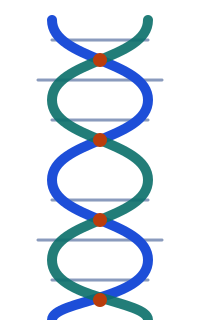

What is protein folding?
A protein starts life as a long chain. To work, it has to curl up into a precise shape.
From a chain to a machine

Cells build proteins by joining small units called amino acids into a chain. There are 20 standard amino acids, and the order they appear in is the protein's sequence. That order is written in the cell's genes.
The chain does not stay stretched out. It folds into a three-dimensional shape, and that shape lets the protein do its job: speeding up a chemical reaction, carrying oxygen, sending a signal or defending the body.
Try it: fold the chain
This is a simplified drawing, not a real protein. Press the button to switch between a loose chain and a folded one.
The folding problem
For decades, scientists asked: given only the sequence, can you predict the final shape? Experiments such as X-ray crystallography and cryo-electron microscopy can reveal shapes, but they are slow and costly. Computers that could predict a shape from the sequence would save enormous effort.
A famous observation, often called Levinthal's paradox, notes that a chain has far too many possible shapes to try them all, yet real proteins fold quickly. This is part of why the problem was so hard. In 2020, DeepMind's AlphaFold 2 showed that deep learning could solve much of it, and its creators shared the 2024 Nobel Prize in Chemistry with David Baker. Boltz builds on this line of work.